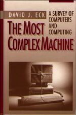

The Most Complex Machine
 The Most Complex Machine: A Survey of Computers and Computing is a textbook that was published in 1995 by A K Peters publishing (later acquired by Taylor & Francis).The book is a survey of computer science, meant for use in an introductory college-level course. As of March 2023, the book has finally gone out of print, allowing the copyright to revert to the author, David Eck. As the author, I hereby relase the book under the Creative Commons Attribution NonCommercial ShareAlike license, and I am making a PDF of the book available for free download:
Although the book is quite old, most of it is still valid, and it can still provide an introduction to the basics of computer science.
I wrote several small programs for use with the book, which are all now available as web apps that run in a web browser: xDataReps, xLogicCircuits, xTuringMachine, xTurtle, xComputer, xModels, and xSortLab. At some point, I might update some labs that were based on older Java versions of the programs. (Click here for an old web site with the Java applets and labs, if you are curious, but the Java software is now outdated and unusable.) And I might yet decide to try to update the book at some point.
The rest of this page contains some information about the book.
Chapter Summaries
MY VIEW OF COMPUTER SCIENCE is that it is largely a study of man-made complex systems. These systems are computers and the programs they run. The goal of computer science is to understand how those systems can be constructed, and to discover their abilities and limitations. Here is what I covered in each chapter:
Chapter 1: "Introduction: What Computers Do"
This chapter introduces the idea of structured complexity, which refers to the way very complex systems can be built up, level by level, from simple parts. Three examples are given that will play a central role in the rest of the book: The data manipulated by computers form complex structures of information that are built from individual "bits". The computer itself is a complex physical structure built from simple electronic switches called transistors. The programs that the computer runs are built from very simple instructions in the "machine language" of the computer.
Chapter 2: "Teaching Silicon to Compute"
Chapters 2 and 3 show how a computer can be built and how it can execute machine language instructions. In Chapter 2 the question is: How can electronic circuits be built that can do things like add numbers and store information? This turns out to have a surprising connection to the branch of mathematics called Boolean algebra, which is the study of the "logical" values TRUE and FALSE and the rules for manipulating them. In fact, in a very real sense, the computer is a "logic machine."
Chapter 3: "Building A Computer"
Chapter 3 shows how the memory circuits and computational circuits from Chapter 2 can be combined into a computer. Although the model computer constructed in this chapter is fairly simple as computers go, it works in the same basic way as most real computers. At the heart of the computer is a "Control Circuit" that directs the operation of the computer as it reads program instructions from memory and carries them out. This program shows how to build a Control Circuit that will work with programs written in a specific "machine language." This machine language is covered in some detail.
Chapter 4: "Theoretical Computers"
The abilities and limitations of computers were studied before the first computer was ever built! This theoretical study of computation was started in the 1930s by Alan Turing and Alonzo Church, among others. Their work produced two surprising results, which are covered in this chapter: First of all, it turns out that all computers are equivalent in the problems they can solve, at least if we are willing to ignore differences in their speed and the amount of memory they have. This is called "Computational Universality." Second, there are some very natural problems that can never be solved by any computer. Chapter 4 also covers Turing Machines, abstract computing devices invented and studied by Alan Turing as part of his investigation of the nature of computation.
Chapter 5: "Real Computers"
Whereas previous chapters dealt with theoretical machines and simple model computers, this chapter turns finally to real computers. It includes a quick history of computing, including the Analytical Engine and the development of the first electronic, stored-program, general-purpose computers. The second section of the chapter explains how today's real computers work, with peripheral devices, busses, operating systems, and user interfaces. A final section looks briefly at the social impact of computing.
Chapter 6: "Programming"
Chapters 6 through 8 are an introduction to programming. The first two chapters on programming use a made-up language called xTurtle to illustrate the ideas that are discussed. xTurtle includes "turtle graphics" commands for drawing pictures on the computer's screen. Chapter 6 covers the most basic ideas: built-in subroutines, variables, assignment statements, input-output, loops and decisions. As always, the emphasis is on building up complex structures--programs in this case--from simple parts. There is also some emphasis on thinking about programs. Preconditions and postconditions are introduced as a way of thinking about programs.
Chapter 7: "Subroutines and Recursion"
Subroutines are a major tool for constructing programs. They are black boxes that chunk together the instructions for performing some task. The first section of this chapter covers subroutines in xTurtle. The second section turns to the question of program design and introduces the more general idea of "module." The phases of software life cycle--analysis, design, coding, testing, and maintenance---are discussed. The final section of the chapter introduces recursion and gives some examples of pictures that can be drawn with recursive xTurtle subroutines.
Chapter 8: "Real Programming Languages"
Many real programming languages--those used for serious programming--are similar to the xTurtle language in having variables, loops, subroutines, and so on. But there is one essential aspect of computing that is not seen in xTurtle: the ability to create data structures. One of the major themes in the development of programming languages has been the increasing respect for representing different types of data. This chapter looks at data structures and modules, using the language Pascal as its principle example. The chapter also includes a brief general history of programming languages and a section on non-traditional languages such as LISP and Prolog.
Chapter 9: "Applications"
This chapter starts with a survey of the most common ways in which individuals use their personal computers: word-processing, graphics, spreadsheets, databases and communication. It then turns to larger-scale application including computer modeling (for example, of weather) and optimization (for example, linear programming). None of these are covered in great detail; the idea is to indicate the range of computer applications. An extended "postscript" to this chapter discusses analysis of algorithms, a branch of theoretical computer science that deals with the practical questions of running time and memory requirements of programs. This section also discusses the famous "P=NP" problem.
Chapter 10: "Cooperating Computers"
The standard computer, as presented in the rest of the text, has a single processor that can do only one thing at a time. That processor can work on several different "processes" using a technique called multitasking where the processor rapidly shifts its attention from one process to another. This chapter looks at what can happen when you actually have several processors working simultaneously. This can happen if there are several processors in one computer (called multiprocessing) or when several computers are connected together to form a network (called distributed processing). This chapter looks at programming for such "parallel processing", including the problem of data that has to be shared by several processors. The chapter also looks at networking in general and discusses several network protocols.
Chapter 11: "Graphics"
There are two types of programs for creating images on a computer: painting programs and drawing programs. This chapter concentrates on the latter, where a data structure is used to represent a "model" of a scene. Models are assembled from simple components using "geometric transformations" that can resize, move and rotate the components into the desired position in a scene. Once the geometric model is created, object attributes such as color and surface texture can be added. Finally, the scene is "rendered." This involves the creation of an image that shows what the scene would look like from a given point of view when lit by specified light sources.
Chapter 12: "Artificial Intelligence"
This chapter ends the book on a more philosophical note. The chapter starts with a survey of traditional artificial intelligence, based on symbol manipulation. The second section outlines the heated philosophical debate about AI that has gone on from the very beginning of the subject. A final section looks at recent trends in AI that move away from the traditional symbolic approach: neural nets, artificial life, and the genetic algorithm.
Answers
Each chapter ends with three to eight questions. These are not simple "exercises." They are meant to require (or inspire?) thought and discussion. My answers--about fifty pages of them--are provided in this appendix to the text. In a few cases, I cover new material that didn't quite fit into the body of the text.
Click here for a detailed Table of Contents.